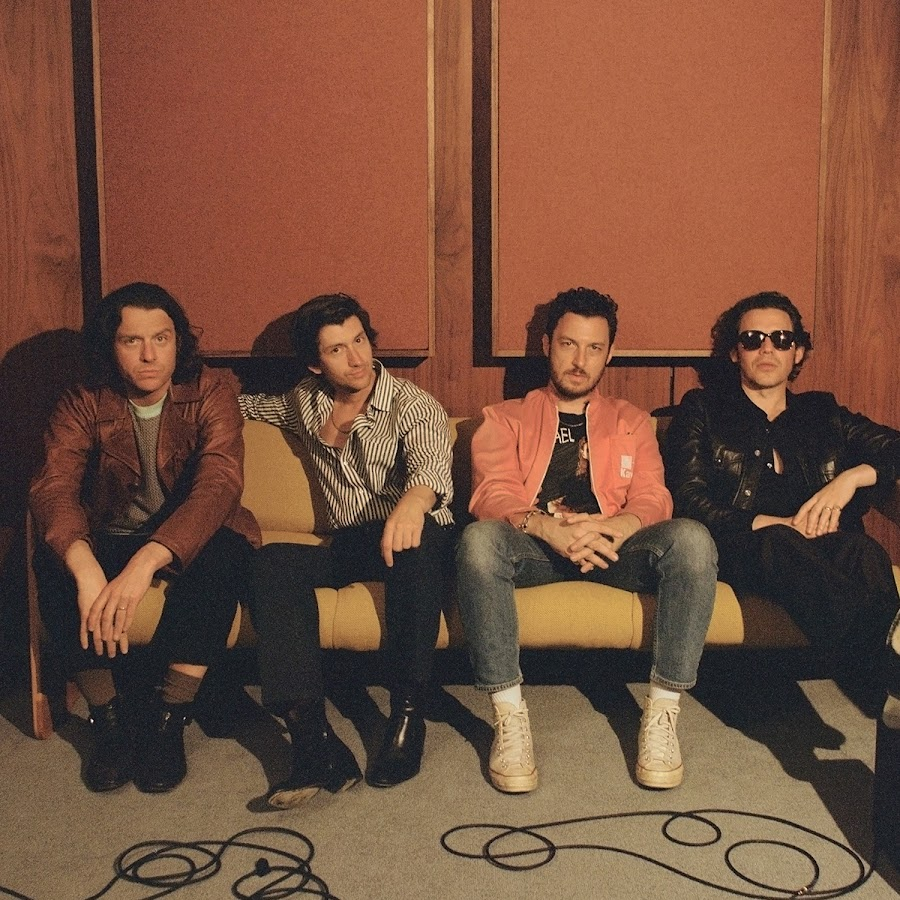
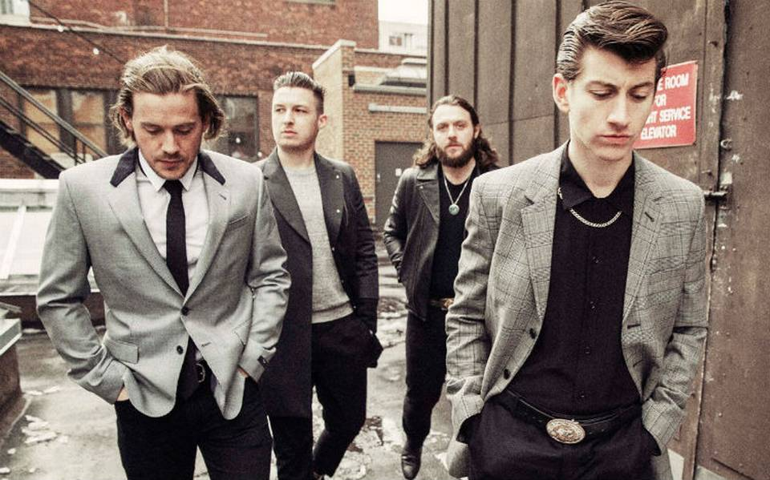

Arctic Monkeys es una banda británica de rock, formada en Sheffield, Reino Unido.
El grupo está compuesto por el guitarrista principal y vocalista Alex Turner,
el guitarrista Jamie Cook,
el baterista Matt Helders y el bajista Nick O'Malley.
El bajista original de la banda, Andy Nicholson, dejó el proyecto en 2006
poco después del lanzamiento del álbum debut de la banda.
Las letras de las canciones de Arctic Monkeys frecuentemente hablan de la realidad social, como por ejemplo "A Certain Romance", la cual describe a la cultura indie; observaciones sobre la vida de la clase obrera, como en el tema "When the Sun Goes Down", descrita como una "canción ingeniosa e intensa acerca del distrito de Neepsend de Sheffield." Basados en su estilo musical, Arctic Monkeys han sido comparados con músicos como el rapero Mike Skinner, Morrissey y Jarvis Cocker, conocidos por sus combinaciones de letras observacionales y humor. La inspiración principal de Arctic Monkeys viene de The Smiths, The Beatles, The Velvet Underground, The Vines y Oasis